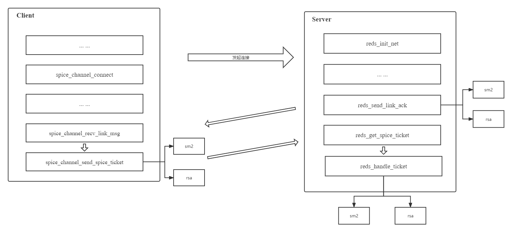
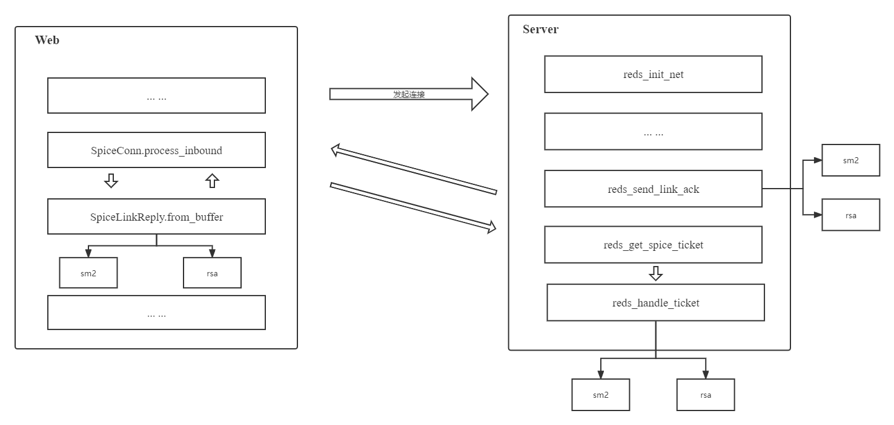

Spice-Server
https://github.com/spice-gm/qemu/tree/stable-6.1-for-spice-gm https://github.com/spice-gm/spice-gm
Password 口令验证 SM2 实现 --- Server端
首先使用 openssl EVP 接口实现 SM2 工具库，Server 需要 CPP 版本
sm2-EVP 项目见 https://github.com/Sovea/sm2-EVP
口令验证改造
Spice Server及QEMU改造主要是对口令身份验证逻辑的改造。改造的期望结果是实现基于SM2算法的口令验证，并保持原RSA方案可用，通过QEMU启动虚拟机时指定ticket-handler参数进行自由选择。
QEMU在此改造过程中主要承担参数解析功能，需新增参数ticket-handler并将值通过Spice Server中通过attribute((visibility( default )))导出的函数符号进行传递。参数解析工作主要由spice-core.c中qemu_spice_init函数完成，需新增ticket-handler字段并通过qemu_opt_get读取对应值，并在qemu-options.hx配置文件中增加ticket-handler参数介绍。
Spice Server需导出用于设置ticket-handler的函数，且Server端连接口令相关配置主要存在于reds->config->taTicket(TicketAuthentication结构体)。具体实现是在TicketAuthentication中新增ticket-handler变量，将设计函数spice_server_set_ticket_handler在spice-server.h、spice-server.syms中声明并在reds.cpp中实现，用于将ticket-handler值进行保存，并设定默认值为sm2。
将Server端reds_send_link_ack、reds_handle_ticket逻辑拆分为sm2、rsa两种实现，利用sm2-EVP完成基于SM2算法的口令验证逻辑开发，最终形成如图所示逻辑结构，口令验证实际逻辑路线由ticket-handler控制。


ticket-handler参数添加
static void qemu_spice_init(void)
{
QemuOpts *opts = QTAILQ_FIRST(&qemu_spice_opts.head);
char *password = NULL;
const char *passwordSecret;
const char *str, *x509_dir, *addr, *ticket_handler,
*x509_key_password = NULL,
*x509_dh_file = NULL,
*tls_ciphers = NULL;
char *x509_key_file = NULL,
*x509_cert_file = NULL,
*x509_cacert_file = NULL;
int port, tls_port, addr_flags;
spice_image_compression_t compression;
spice_wan_compression_t wan_compr;
bool seamless_migration;
qemu_thread_get_self(&me);
if (!opts) {
return;
}
port = qemu_opt_get_number(opts, "port", 0);
tls_port = qemu_opt_get_number(opts, "tls-port", 0);
if (port < 0 || port > 65535) {
error_report("spice port is out of range");
exit(1);
}
if (tls_port < 0 || tls_port > 65535) {
error_report("spice tls-port is out of range");
exit(1);
}
passwordSecret = qemu_opt_get(opts, "password-secret");
if (passwordSecret) {
Error *local_err = NULL;
if (qemu_opt_get(opts, "password")) {
error_report("'password' option is mutually exclusive with "
"'password-secret'");
exit(1);
}
password = qcrypto_secret_lookup_as_utf8(passwordSecret,
&local_err);
if (!password) {
error_report_err(local_err);
exit(1);
}
} else {
str = qemu_opt_get(opts, "password");
if (str) {
warn_report("'password' option is deprecated and insecure, "
"use 'password-secret' instead");
password = g_strdup(str);
}
}
ticket_handler = qemu_opt_get(opts, "ticket-handler");
if (!ticket_handler) {
ticket_handler = "sm2";
}
if (tls_port) {
x509_dir = qemu_opt_get(opts, "x509-dir");
if (!x509_dir) {
x509_dir = ".";
}
str = qemu_opt_get(opts, "x509-key-file");
if (str) {
x509_key_file = g_strdup(str);
} else {
x509_key_file = g_strdup_printf("%s/%s", x509_dir,
X509_SERVER_KEY_FILE);
}
str = qemu_opt_get(opts, "x509-cert-file");
if (str) {
x509_cert_file = g_strdup(str);
} else {
x509_cert_file = g_strdup_printf("%s/%s", x509_dir,
X509_SERVER_CERT_FILE);
}
str = qemu_opt_get(opts, "x509-cacert-file");
if (str) {
x509_cacert_file = g_strdup(str);
} else {
x509_cacert_file = g_strdup_printf("%s/%s", x509_dir,
X509_CA_CERT_FILE);
}
x509_key_password = qemu_opt_get(opts, "x509-key-password");
x509_dh_file = qemu_opt_get(opts, "x509-dh-key-file");
tls_ciphers = qemu_opt_get(opts, "tls-ciphers");
}
addr = qemu_opt_get(opts, "addr");
addr_flags = 0;
if (qemu_opt_get_bool(opts, "ipv4", 0)) {
addr_flags |= SPICE_ADDR_FLAG_IPV4_ONLY;
} else if (qemu_opt_get_bool(opts, "ipv6", 0)) {
addr_flags |= SPICE_ADDR_FLAG_IPV6_ONLY;
#ifdef SPICE_ADDR_FLAG_UNIX_ONLY
} else if (qemu_opt_get_bool(opts, "unix", 0)) {
addr_flags |= SPICE_ADDR_FLAG_UNIX_ONLY;
#endif
}
spice_server = spice_server_new();
spice_server_set_addr(spice_server, addr ? addr : "", addr_flags);
if (port) {
spice_server_set_port(spice_server, port);
}
if (tls_port) {
spice_server_set_tls(spice_server, tls_port,
x509_cacert_file,
x509_cert_file,
x509_key_file,
x509_key_password,
x509_dh_file,
tls_ciphers);
}
spice_server_set_ticket_handler(spice_server, ticket_handler);
if (password) {
qemu_spice.set_passwd(password, false, false);
}
spice_server_set_ticket_handler(spice_server, ticket_handler);
if (qemu_opt_get_bool(opts, "sasl", 0)) {
if (spice_server_set_sasl(spice_server, 1) == -1) {
error_report("spice: failed to enable sasl");
exit(1);
}
auth = "sasl";
}
if (qemu_opt_get_bool(opts, "disable-ticketing", 0)) {
auth = "none";
spice_server_set_noauth(spice_server);
}
if (qemu_opt_get_bool(opts, "disable-copy-paste", 0)) {
spice_server_set_agent_copypaste(spice_server, false);
}
if (qemu_opt_get_bool(opts, "disable-agent-file-xfer", 0)) {
spice_server_set_agent_file_xfer(spice_server, false);
}
compression = SPICE_IMAGE_COMPRESS_AUTO_GLZ;
str = qemu_opt_get(opts, "image-compression");
if (str) {
compression = parse_compression(str);
}
spice_server_set_image_compression(spice_server, compression);
wan_compr = SPICE_WAN_COMPRESSION_AUTO;
str = qemu_opt_get(opts, "jpeg-wan-compression");
if (str) {
wan_compr = parse_wan_compression(str);
}
spice_server_set_jpeg_compression(spice_server, wan_compr);
wan_compr = SPICE_WAN_COMPRESSION_AUTO;
str = qemu_opt_get(opts, "zlib-glz-wan-compression");
if (str) {
wan_compr = parse_wan_compression(str);
}
spice_server_set_zlib_glz_compression(spice_server, wan_compr);
str = qemu_opt_get(opts, "streaming-video");
if (str) {
int streaming_video = parse_stream_video(str);
spice_server_set_streaming_video(spice_server, streaming_video);
} else {
spice_server_set_streaming_video(spice_server, SPICE_STREAM_VIDEO_OFF);
}
spice_server_set_agent_mouse
(spice_server, qemu_opt_get_bool(opts, "agent-mouse", 1));
spice_server_set_playback_compression
(spice_server, qemu_opt_get_bool(opts, "playback-compression", 1));
qemu_opt_foreach(opts, add_channel, &tls_port, &error_fatal);
spice_server_set_name(spice_server, qemu_name ?: "QEMU " QEMU_VERSION);
spice_server_set_uuid(spice_server, (unsigned char *)&qemu_uuid);
seamless_migration = qemu_opt_get_bool(opts, "seamless-migration", 0);
spice_server_set_seamless_migration(spice_server, seamless_migration);
spice_server_set_sasl_appname(spice_server, "qemu");
if (spice_server_init(spice_server, &core_interface) != 0) {
error_report("failed to initialize spice server");
exit(1);
};
using_spice = 1;
migration_state.notify = migration_state_notifier;
add_migration_state_change_notifier(&migration_state);
spice_migrate.base.sif = &migrate_interface.base;
qemu_spice.add_interface(&spice_migrate.base);
qemu_spice_input_init();
qemu_spice_display_stop();
g_free(x509_key_file);
g_free(x509_cert_file);
g_free(x509_cacert_file);
g_free(password);
#ifdef HAVE_SPICE_GL
if (qemu_opt_get_bool(opts, "gl", 0)) {
if ((port != 0) || (tls_port != 0)) {
error_report("SPICE GL support is local-only for now and "
"incompatible with -spice port/tls-port");
exit(1);
}
if (egl_rendernode_init(qemu_opt_get(opts, "rendernode"),
DISPLAYGL_MODE_ON) != 0) {
error_report("Failed to initialize EGL render node for SPICE GL");
exit(1);
}
display_opengl = 1;
spice_opengl = 1;
}
#endif
}
Ticket 口令验证核心函数
static bool reds_send_link_ack_sm2(RedsState *reds, RedLinkInfo *link)
{
struct {
SpiceLinkHeader header;
SpiceLinkReply ack;
} msg;
RedChannel *channel;
const RedChannelCapabilities *channel_caps;
BUF_MEM *bmBuf;
BIO *bio = nullptr;
int ret = FALSE;
size_t hdr_size;
spice_warning("Send Link Ack With SM2.");
SPICE_VERIFY(sizeof(msg) == sizeof(SpiceLinkHeader) + sizeof(SpiceLinkReply));
msg.header.magic = SPICE_MAGIC;
hdr_size = sizeof(msg.ack);
msg.header.major_version = GUINT32_TO_LE(SPICE_VERSION_MAJOR);
msg.header.minor_version = GUINT32_TO_LE(SPICE_VERSION_MINOR);
msg.ack.error = GUINT32_TO_LE(SPICE_LINK_ERR_OK);
channel = reds_find_channel(reds, link->link_mess->channel_type,
link->link_mess->channel_id);
if (!channel) {
if (link->link_mess->channel_type != SPICE_CHANNEL_MAIN) {
spice_warning("Received wrong header: channel_type != SPICE_CHANNEL_MAIN");
return FALSE;
}
spice_assert(reds->main_channel);
channel = reds->main_channel.get();
}
reds_channel_init_auth_caps(link, channel); /* make sure common caps are set */
channel_caps = channel->get_local_capabilities();
msg.ack.num_common_caps = GUINT32_TO_LE(channel_caps->num_common_caps);
msg.ack.num_channel_caps = GUINT32_TO_LE(channel_caps->num_caps);
hdr_size += channel_caps->num_common_caps * sizeof(uint32_t);
hdr_size += channel_caps->num_caps * sizeof(uint32_t);
msg.header.size = GUINT32_TO_LE(hdr_size);
msg.ack.caps_offset = GUINT32_TO_LE(sizeof(SpiceLinkReply));
if (!reds->config->sasl_enabled
|| !red_link_info_test_capability(link, SPICE_COMMON_CAP_AUTH_SASL)) {
if (!(bio = BIO_new(BIO_s_mem()))) {
spice_warning("BIO new failed");
red_dump_openssl_errors();
return FALSE;
}
// SM2 handle
// generate EC key pair(pem)
sm2Handler.GenEcPairKey(link->tiTicketing.priKey, link->tiTicketing.pubKey);
unsigned char *pubKeyArray = (unsigned char *)link->tiTicketing.pubKey.c_str();
// Get EVP_PKEY
sm2Handler.CreateEVP_PKEY(pubKeyArray, 1, &link->tiTicketing.evp_pkey);
link->tiTicketing.ec_key = EVP_PKEY_get1_EC_KEY(link->tiTicketing.evp_pkey);
i2d_EC_PUBKEY_bio(bio, link->tiTicketing.ec_key);
BIO_get_mem_ptr(bio, &bmBuf);
memcpy(msg.ack.pub_key, bmBuf->data, sizeof(msg.ack.pub_key));
} else {
/* if the client sets the AUTH_SASL cap, it indicates that it
* supports SASL, and will use it if the server supports SASL as
* well.
*/
spice_warning("not initialising SM2 key");
memset(msg.ack.pub_key, '\0', sizeof(msg.ack.pub_key));
}
if (!red_stream_write_all(link->stream, &msg, sizeof(msg)))
goto end;
for (unsigned int i = 0; i < channel_caps->num_common_caps; i++) {
guint32 cap = GUINT32_TO_LE(channel_caps->common_caps[i]);
if (!red_stream_write_all(link->stream, &cap, sizeof(cap)))
goto end;
}
for (unsigned int i = 0; i < channel_caps->num_caps; i++) {
guint32 cap = GUINT32_TO_LE(channel_caps->caps[i]);
if (!red_stream_write_all(link->stream, &cap, sizeof(cap)))
goto end;
}
ret = TRUE;
end:
if (bio != nullptr) BIO_free(bio);
return ret;
}
static void reds_handle_ticket_sm2(void *opaque) {
auto link = static_cast<RedLinkInfo *>(opaque);
RedsState *reds = link->reds;
int password_size;
string encrypted_data_str((char *)link->tiTicketing.encrypted_ticket.encrypted_data, 128);
string decrypted_password;
int len_plaint = 0;
spice_warning("Handle Ticket With SM2.");
password_size = sm2Handler.Decrypt(encrypted_data_str, encrypted_data_str.length(), decrypted_password, len_plaint, link->tiTicketing.priKey);
if (password_size == -1) {
if (!reds->config->ticketing_enabled || link->skip_auth) {
reds_handle_link(link);
return;
}
spice_warning("failed to decrypt SM2 encrypted password");
red_dump_openssl_errors();
goto error;
}
if (reds->config->ticketing_enabled && !link->skip_auth) {
time_t ltime;
bool expired;
if (strlen(reds->config->taTicket.password) == 0) {
spice_warning("Ticketing is enabled, but no password is set. "
"please set a ticket first");
goto error;
}
ltime = spice_get_monotonic_time_ns() / NSEC_PER_SEC;
expired = (reds->config->taTicket.expiration_time < ltime);
if (expired) {
spice_warning("Ticket has expired");
// goto error;
}
if (strcmp(decrypted_password.c_str(), reds->config->taTicket.password) != 0) {
spice_warning("Invalid password");
goto error;
}
}
reds_handle_link(link);
return;
error:
reds_send_link_result(link, SPICE_LINK_ERR_PERMISSION_DENIED);
reds_link_free(link);
}
static void reds_get_spice_ticket_sm2(RedLinkInfo *link) {
red_stream_async_read(
link->stream,
reinterpret_cast<uint8_t *>(&link->tiTicketing.encrypted_ticket.encrypted_data),
128, reds_handle_ticket_sm2, link);
}
Server改造后增加SM2工具类，编译
meson.build 修改
spice_server_headers = [
spice_version_h,
'spice-audio.h',
'spice-char.h',
'spice-core.h',
'spice-input.h',
'spice-migration.h',
'spice-qxl.h',
'spice-server.h',
'spice-replay.h',
'spice.h',
'sm2.h', # Add
]
spice_server_sources = [
spice_server_headers,
spice_server_enums,
'agent-msg-filter.c',
'agent-msg-filter.h',
'cache-item.h',
'char-device.cpp',
'char-device.h',
... ...
'sm2.h', # Add
'sm2.cpp', # Add
]